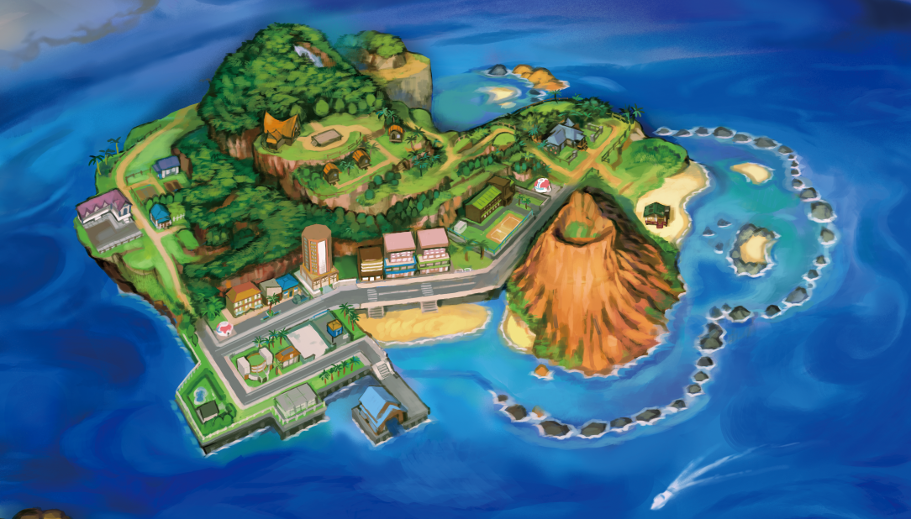
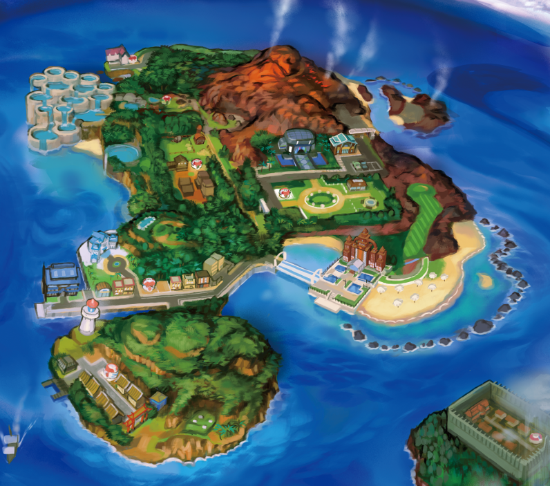
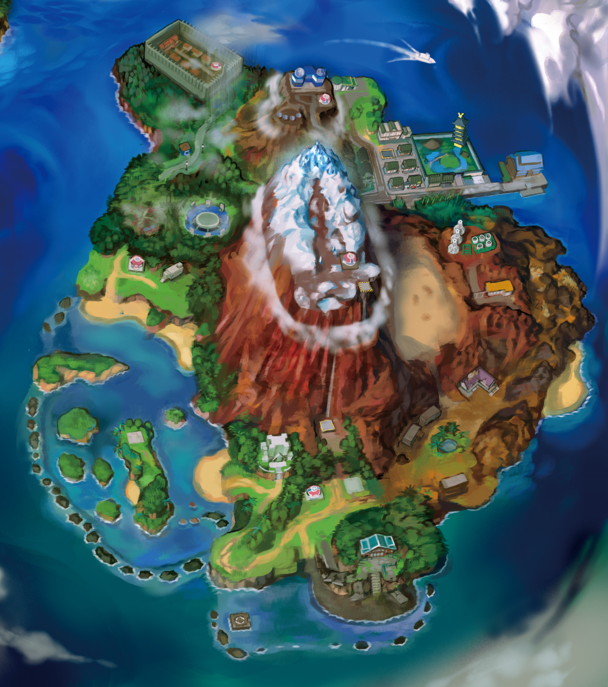
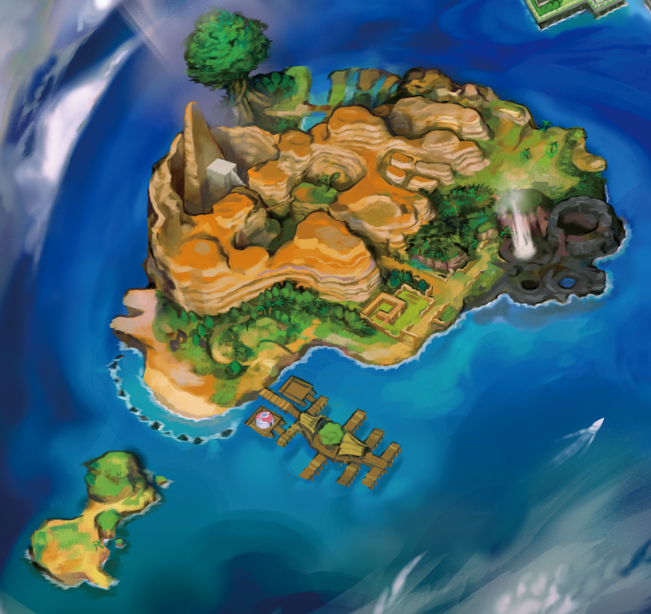

Melemele
Embora repleta de natureza, a Ilha Melemele, no noroeste do arquipélago, apresenta os ambientes menos extremos. Ela abriga o maior povoado de Alola, a Cidade de Hau'oli. Suas rotas elevam-se suavemente em direção ao centro da ilha, formando uma montanha de inclinação gradual em cujo topo se encontram as Ruínas do Conflito. Um marco notável da Ilha Melemele é o Colina Dez Quilates, formado a partir de um vulcão submarino e que possui uma cavidade a céu aberto em seu centro, a qual também lembra um vulcão.

Akala
A Ilha Akala, situada no nordeste do arquipélago, abriga o único vulcão ativo de Alola, localizado no Parque do Vulcão Wela. Ela também possui o maior número de povoamentos entre as quatro ilhas naturais. Sua maior cidade, a Cidade de Heahea, conta com diversos grandes hotéis-resort, como o Hano Grand Resort, que dispõe de praia e campo de golfe próprios. Um marco notável da Ilha Akala é Ladeira Brooklet, com suas cascatas em degraus que lembram terraços agrícolas. A ilha também abriga uma floresta tropical conhecida como Selve Exuberante.

Ula'ula
A Ilha Ula'ula, no sudeste do arquipélago, é a maior das ilhas de Alola. Ela também é a mais variada em termos de clima e relevo, apresentando áreas de terreno significativamente mais acidentado do que as outras ilhas. Apesar de seu grande tamanho, possui poucos assentamentos: Cidade de Malie, a maior cidade de Ula'ula; Vila Tapu, destruída pelos Tapu há muito tempo e que conta apenas com um Centro Pokémon; e Vila Pô, ocupada pela Equipe Skull. Todos esses assentamentos situam-se à sombra de uma cadeia de montanhas contínua no coração da ilha, a qual inclui três picos montanhosos e um deserto inóspito. Na costa sudoeste da ilha, encontra-se uma grande lagoa com rochas que podem ser quebradas pela Propulsão Sharpedo, um dos recursos da Pokécarona. Pontos de referência notáveis da Ilha Ula'ula são o Lago da Lua (Lake of the Moone) e o Lago do Sol (Lake of the Sunne); ambos são lagos perfeitamente circulares que possuem conexões especiais com os Pokémon Lendários de Alola, Solgaleo e Lunala.

Poni
A Ilha Poni, no sudoeste do arquipélago, é a menos povoada das ilhas de Alola. Ela abriga apenas um povoado, em Caminho Acião de Poni; no entanto, a Vila Seafolk é um ponto de encontro para o povo do mar. Assim como a Zona da Fronteira em Sinnoh, a ilha é repleta de ambientes acidentados e inóspitos. Embora seu litoral seja relativamente plano, a ilha é, em sua maior parte, montanhosa e rochosa — em parte devido à vasta extensão do Grande Cânion de Poni, descrito como um local de prova natural, que ocupa mais da metade do território da ilha. O acesso à Ilha Exeggutor — uma ilha menor e desabitada que já serviu como local de Desafios — é feito a partir da Vila Seafolk.
